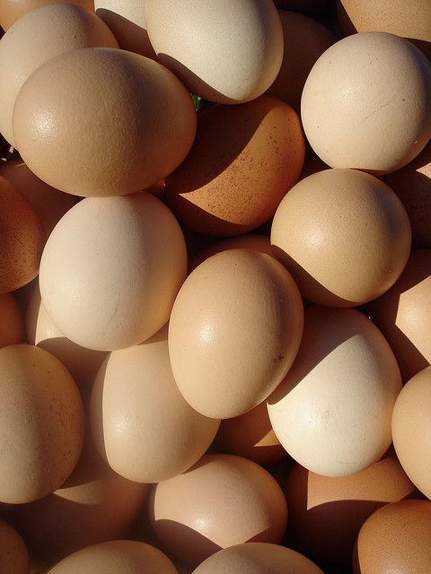

Raw Whole Milk (1L)
$5

Chicken Eggs (12)
$3
Peanut Butter (250g)
$15
Swiss Cheese (340g)
$7Purple Cabbage
$6
Cranberries (150g)
$8
Raw Whole Milk (1L)
$5Chicken Eggs (12)
$3
Peanut Butter (250g)
$15
Swiss Cheese (340g)
$7Purple Cabbage
$6
Cranberries (150g)
$8